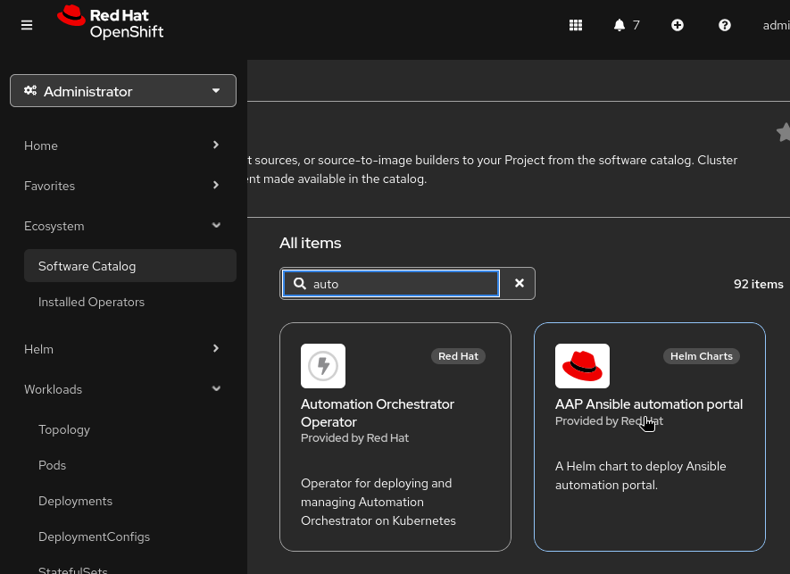
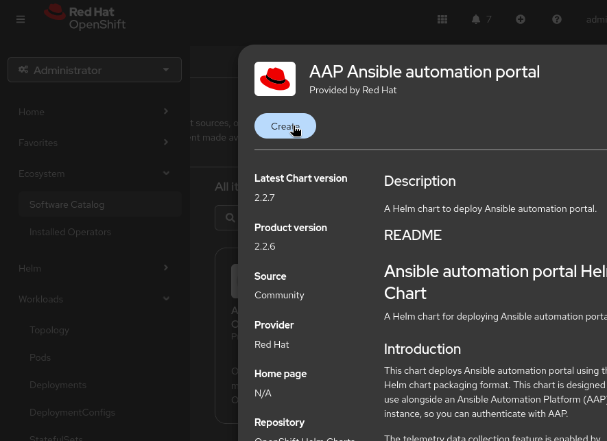
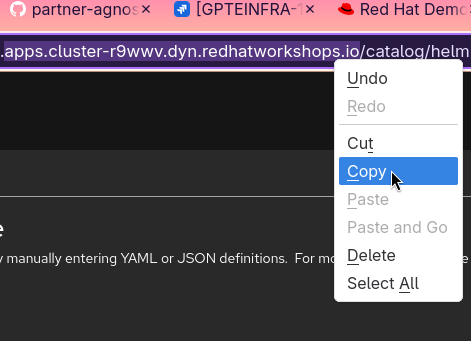
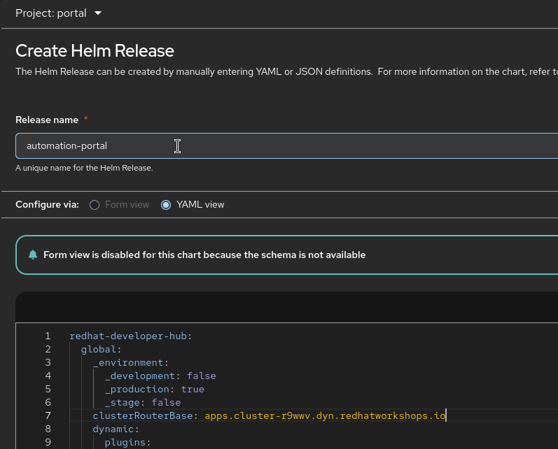
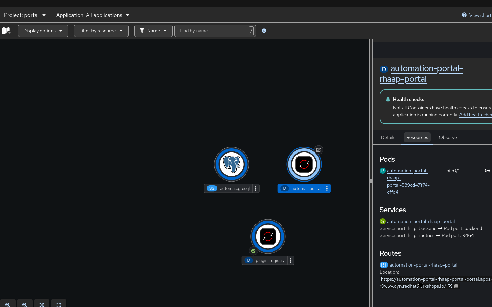
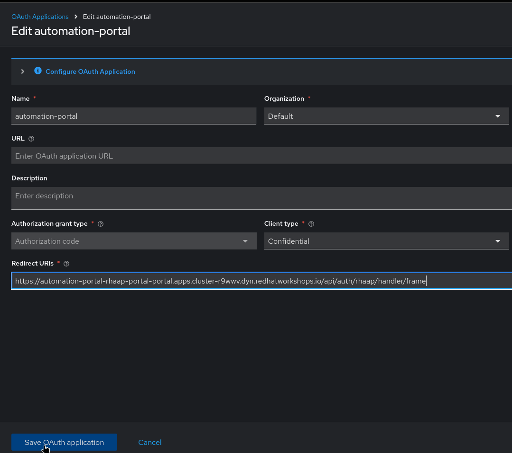
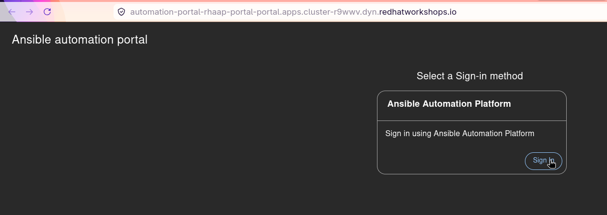
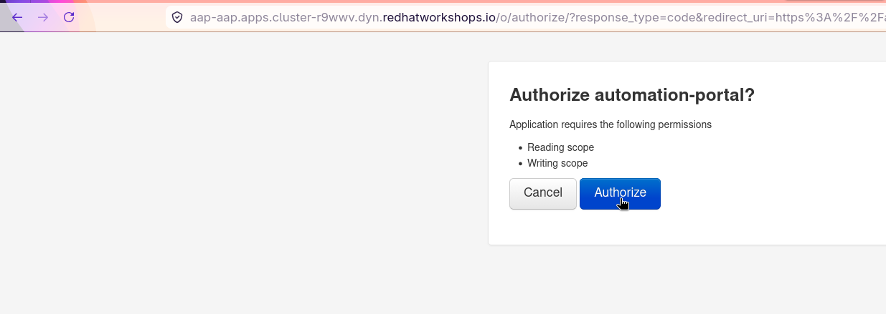
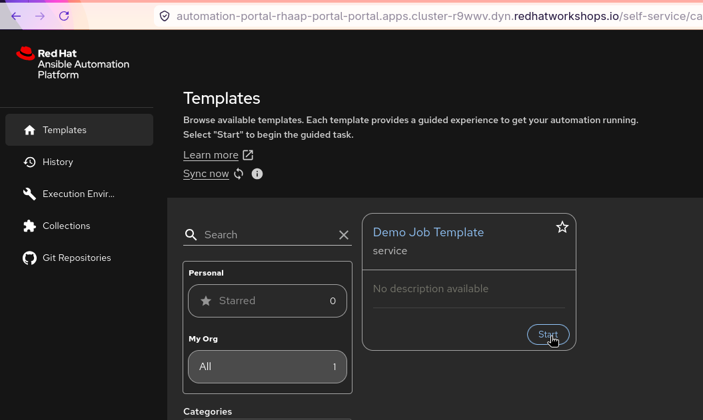
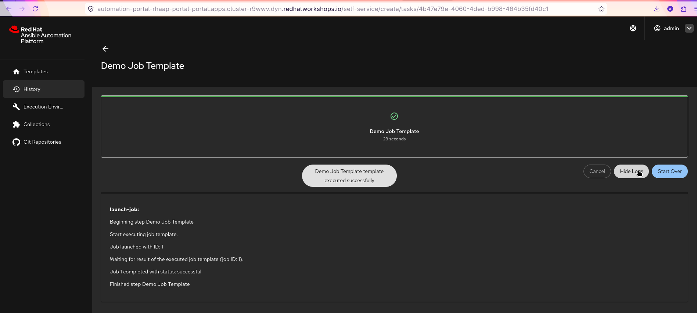

Hands-on Lab: Installing and Verifying the Automation Portal on OCP
In this lab, you will deploy the Automation Portal on your OpenShift Container Platform (OCP) environment.
Installing the Automation Portal
-
Go to Ecosystem > Software Catalog in the OpenShift web console.
-
Search for "Automation Portal" in the catalog and select it.

-
Click on Create to start the installation process.

-
Change the Release Name to
automation-portaland you can change it if you want. -
Change the clusterRouterBase to the correct value for your cluster. For example, if the OCP cluster url is
https://console-openshift-console.apps.cluster-kstzt.dyn.redhatworkshops.iothen the clusterRouterBase should beapps.cluster-kstzt.dyn.redhatworkshops.io.

-
By default, it will be setting up at the Organization Default for the automaton portal the parameter is orgs if you wanted to change it.
-
Once the above settings are done, click on Create to start the installation process.
The installation process will take a few minutes. You can monitor the progress Workloads > Topology in the portal project. Once the installation is complete, you will see the Automation Portal components running.
-
Go to Workloads > Topology in the portal project. Once the installation is complete, you will see the Automation Portal components running.
-
Click on automation-portal-rhaap-portal resource to view the details. You will find the route URL in the Routes section. This URL is used to access the Automation Portal web interface.

-
Copy the route URL and go to Ansible Automation Platform > Access Management > OAuth Applications.
-
Edit the automation-portal OAuth application to include the route URL as a valid redirect URI and save the changes. This step is crucial for the OAuth authentication to work correctly.
https://<aap-portal-hostname>/api/auth/rhaap/handler/frame
-
Access the Web UI of the Automation portal and click on the Login with Ansible Automation Platform button. You will be redirected to the AAP login page. Enter your AAP credentials to log in.

-
Once logged in, you need to provide the necessary permissions. click authorize and you will see the Automation Portal dashboard.

-
Click on the Demo Job Template and click on Launch to execute the job. You will see the job execution status and output.


This is All about setting up the Automation Portal on OCP and verifying its functionality. You can now explore the features of the Automation Portal like RBAC Control and the execution of job templates and workflows via specific users.